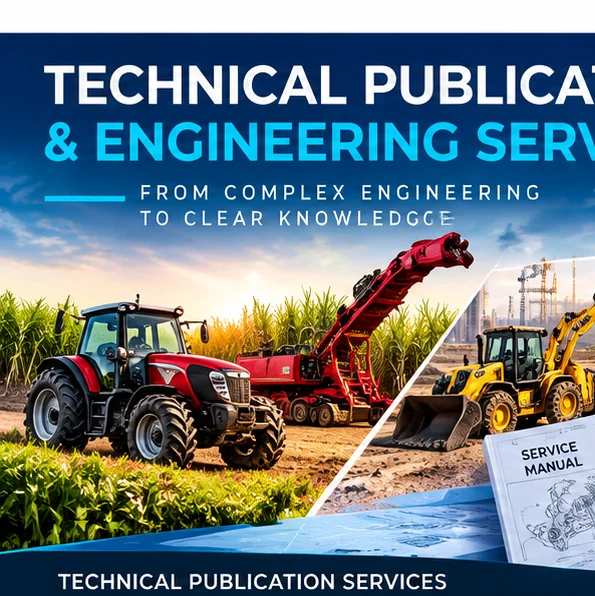
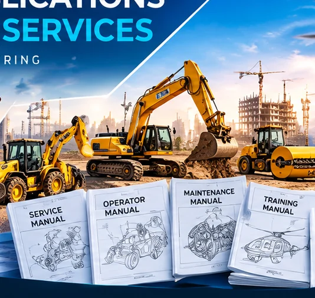
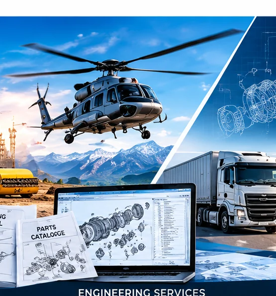
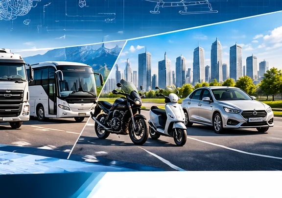

SECTOR 01
↗Agricultural machinery
Tractors, harvesters and field equipment require serviceable parts information and practical operator instructions.

Different equipment, different operating environments, one shared need: clear technical information.
These are areas of team experience and interest, not claims of direct KIZOREX customer contracts.
Tractors, harvesters and field equipment require serviceable parts information and practical operator instructions.

Heavy equipment documentation must help technicians identify assemblies, service systems and work safely.

Complex assemblies benefit from disciplined terminology, precise illustrations and controlled technical content.

Vehicle documentation spans service procedures, diagnostic information, components and end-user guidance.